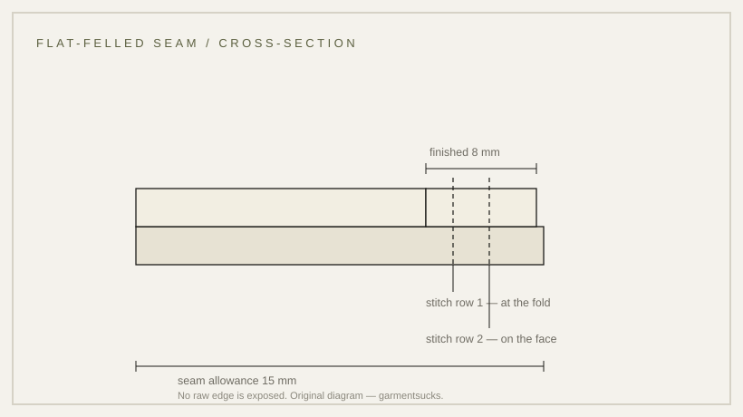

howto · —
How a flat-felled seam works
The flat-felled seam is why a uniform survives being washed, dragged and repaired.
established Published 2026-11-13 · last checked 2026-11-13

Sew a plain seam, trim one allowance, wrap the wider one over it and stitch again. The result shows two rows on the face and one inside, with no raw edge anywhere. Nothing can fray because nothing is exposed, and the stress line carries two layers of cloth instead of one.
That is why it is the load-bearing seam of military clothing: shoulders, yokes, side seams, sleeve seams. It is also why the allowance must be wider than usual — around 15 mm, trimmed to 8 mm on the inside — because the fold needs cloth to wrap with. Grade it down to 10 mm and the seam will not close.
The French seam is the alternative for very light cloth: two passes, fully enclosed, softer against the body but limited to straight seams and not strong enough for a shoulder.
On a garment, look at the inside of a side seam. If you can see a clean folded edge and a second row of stitching, the maker spent the time. If you see an overlocked edge, they did not.

Sources
- ISO 4916 seam classification
- Flat seam illustration (1921, PD)
- Military garment seam records